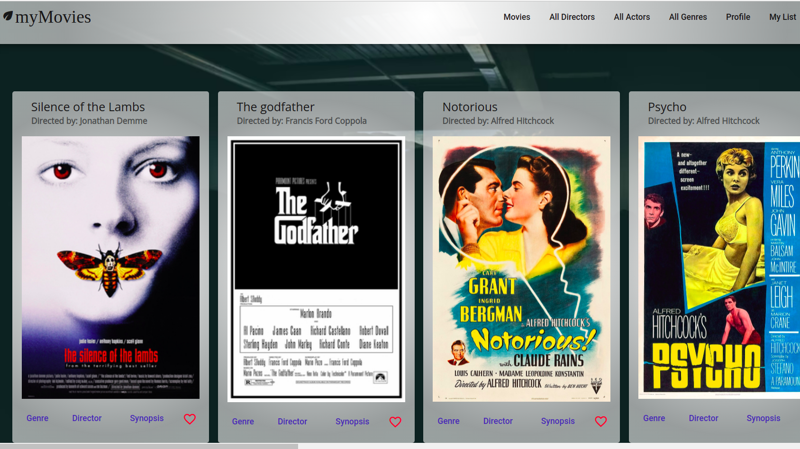
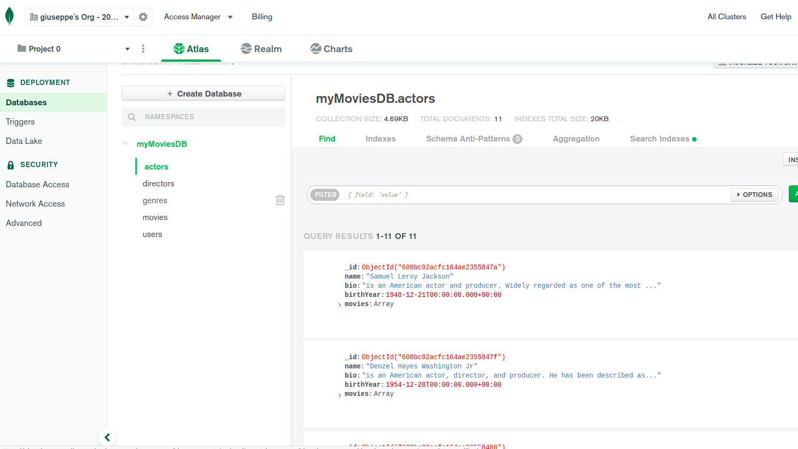
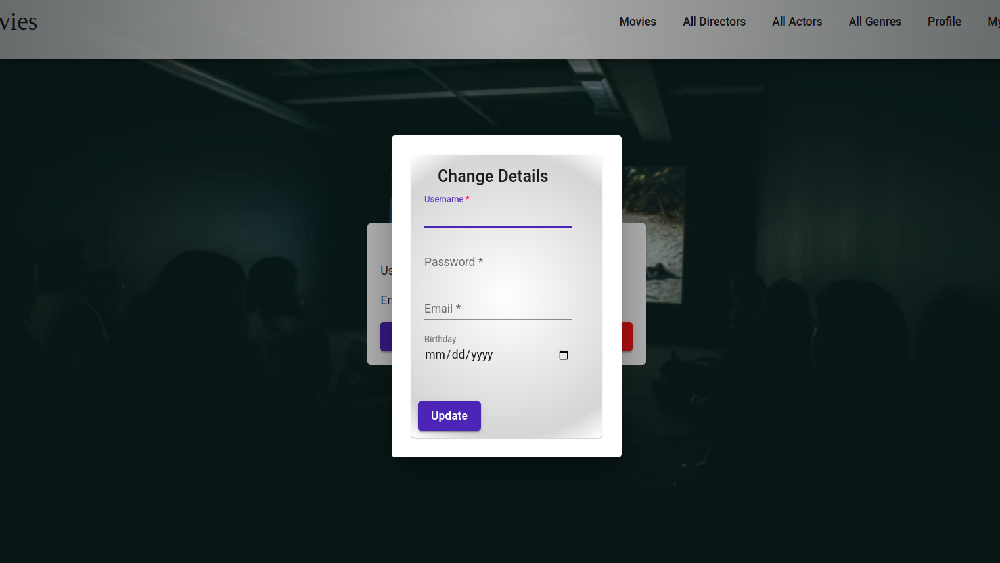
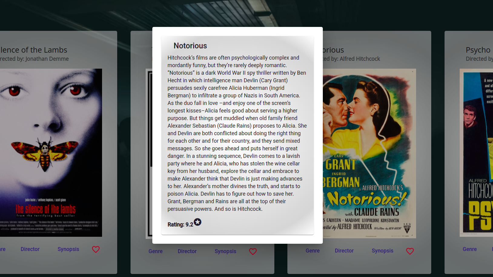
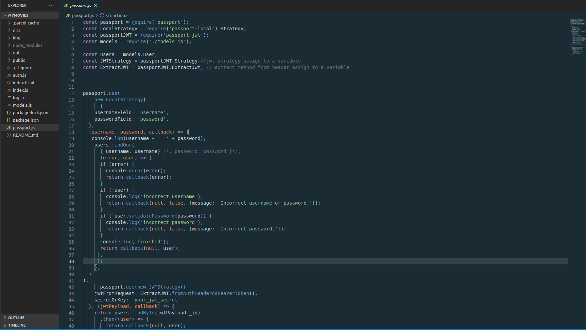
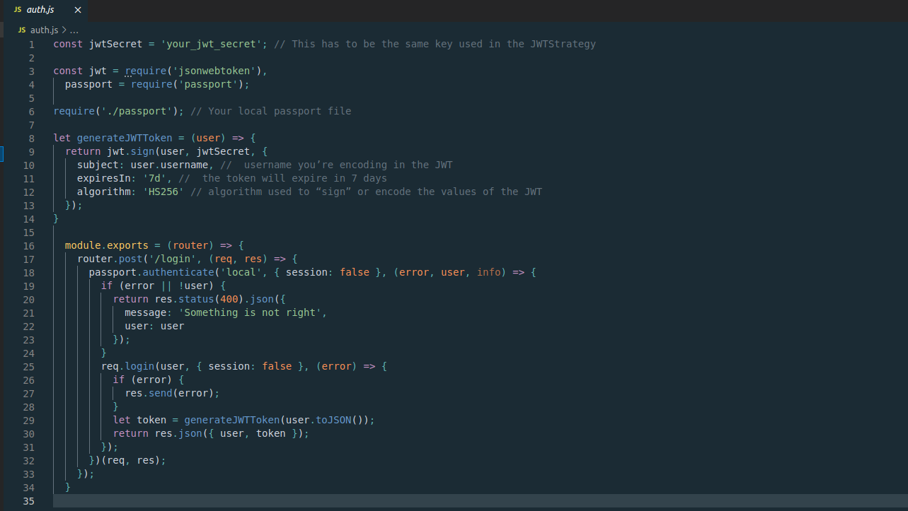

Within this project, I built a server-side component for a "movies" Web Application. The user could access the application to learn more about classic movies, directors, and genres.
My goal with this application was to create a functional full-stack website by covering back- end and database design to front-end development with frameworks such as React and Angular to gain experience of being a full-stack developer and to present this to my portfolio.
With this app, users can browse information about movies, directors, and genres, sign up, update their personal information, and create a list of their favorite movies.
My initial approach was to create a REST API using Node.js and Express so that I could access my content using HTTP methods. After creating my database, I implemented user authentication and authorization to my code. I used a non-relational database like MongoDB to create my content. In my last step, I used Postman to test my API's endpoints.
The client-side is built using React and Angular. myMovies includes several interface views that handle data through my REST API endpoints. The user can log in or register in the application to access information about movies, directors, and genres in the main-view, update information in the profile view, and save favorite movies in the mylist view.
One of the biggest challenges I found during the project was implementing the user authentication and authorization to my back-end , more in particular understanding the logic behind it. With the help of my tutor and mentor I’ve been able to fix the bugs in my code and finish the project on time. Here, I will explain the process and strategies I have used to complete it.
Once I have installed Passport and Passport Strategies, I have defined my strategy (fig 1) and assigned it to a variable (lines 7 and 8).
LocalStrategy (line 12) performs basic HTTP authentication for the login request. It checks if the username and password are correct, if they are, a callback function is executed.
The JWT strategy (line 42, figure 1) allows authentication of users based on a JWT submitted. The strategy extracts a bearer token from the header of the HTTP request (line 43) and verifies its signatures using the secret key (line 44).
Using the LocalStrategy we defined in the previous section, we can check whether the username and password are correct (line 18 fig 2) If they are, we can create a JWT (line 29).
(fig 1)
(fig 2)
